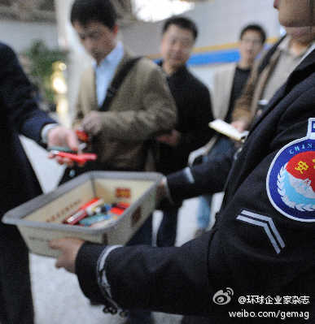

姣姣最近略知一些星座八卦, 感叹:"我好可怜, 我有个白羊座的妈妈, 有个白羊座的姐姐(慧慧), 有个白羊座的弟弟(天培)". 我:"白羊座有什么不好?". 姣姣:"白羊座的脾气都不好!". 真是诬蔑!
关于JDK 7的成都软件技术沙龙的活动页面已经在InfoQ网站上发布了, 7月23日下午在成都天府软件园A3，1楼大会议室. 成都软件技术沙龙－JDK 7 与 Mobile Widget（7月23日 免费报名中！） 网页链接
我是用VPN上的, 多谢提醒. 邀请是输入邮件地址, 所以需要Google +的, 请把邮件地址发给我即可. //@品课网:一定要提醒，加入G+，Gmail不翻墙没发退出哦@Ada李力:可以邀请Google+ ,希望尝试的朋友可以把邮件地址发私信给我.
昆明机场被收缴过一个军刀, 妹妹送的结婚礼物, 没找回来. 现在想起来还恨.@环球企业家杂志:好消息！首都机场推出禁带物品快递业务，已在2号航站楼试运行，安检人员会于每日下午6点前将当日快件交予顾客服务中心，可快递至国内79个城市，北京同城1-2天送达，其他城市3-7天送达，旅客还可选择货到付款。今后你再不用放弃那些禁带物品了 
喜欢去新网站转, 在乐淘上买了双鞋, 手机下单减免20元, 实付89元, 悲剧的是穿上没半天, 鞋跟就掉了. 放在以往, 就是自认倒霉, 找修鞋铺. 现在是打客服电话退货, 退货的费用也由乐淘负担. 从这点上看, 细分的购物网站, 像凡客, 京东, 乐淘, 还是比淘宝的大集市, 购物保障和体验好很多.
海尔商城, 和中粮的我买网类似, 都只有一个厂家的东西, 不是忠实粉丝的话, 会感觉选择不够多. [呵呵] //@沙元军:网购家电可以考虑海尔商城，下单24小时送达，迟到免单有木有？品质保证有木有？上门给设计方案货到付款有木有？送货安装一站式服务，退货上门提货有木有。嗯，借地做个广告@Ada李力:喜欢去新网站转, 在乐淘上买了双鞋, 手机下单减免20元, 实付89元, 悲剧的是穿上没半天, 鞋跟就掉了. 放在以往, 就是自认倒霉, 找修鞋铺. 现在是打客服电话退货, 退货的费用也由乐淘负担. 从这点上看, 细分的购物网站, 像凡客, 京东, 乐淘, 还是比淘宝的大集市, 购物保障和体验好很多.
一直以为不会再去中粮的#我买网#, 买那些超市里就可以买到的东西. 最近还是下了单, 因为要买的米和饮料, 都是死沉死沉的东西, 有人能给送到家, 在这么热的天气里, 是个很爽的事情. 以后年轻人逐渐变宅, 老人占的比重约来越大, 对这种配送家居日用品的需求会很高.